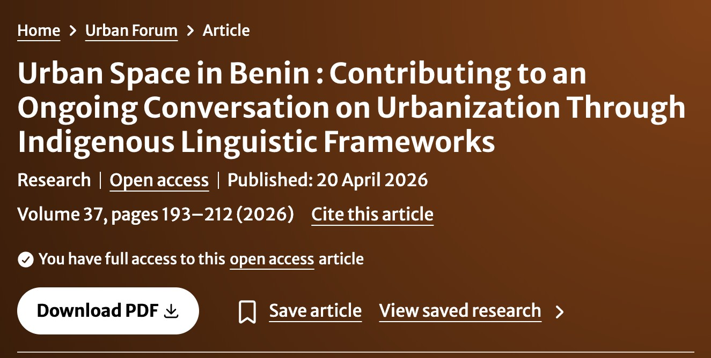

Research translation & fieldwork promotion
Evidence Science in Practice
Translating spatial observations and academic papers into accessible, impactful insights across languages and regions.

Featured publication excerpt examining spatial dynamics, governance, and urban policy implementation.
Urban Forum · doi.org/10.1007/s12132-026-09553-0
Multilingual Critical Writing
Dr. Emmanuel Awohouedji conducts empirical urban research and produces essays, policy documents, and research translation series tailored for community members, non-governmental bodies, and municipal decision-makers.
Essays in English follow infrastructure, floods, waste, public space, the environment and the urban at large, especially people’s lives in these spaces, and the ways these spaces affect those who live in them, and the distance between a finding and a decision.
Le travail suit le passage de l’article scientifique à la décision, ainsi que des phénomènes urbains touchant aussi bien le contexte béninois que d’autres contextes similaires, et ce que la recherche perd quand elle ne voyage pas.
The Urban Forum paper introduces tɔxɔ hùn nùkún, a Mahi/Fon name for a city with open eyes, and asks what policy language misses when a city is already speaking.
Selected publications
- 2026. Urban Space in Benin: Contributing to an Ongoing Conversation on Urbanization Through Indigenous Linguistic Frameworks. Urban Forum. DOI.
- 2025. A street called hope: urban masculinities and place-making in Benin’s age of revelation. PhD thesis, LSE. LSE Research Online.
- February 2025. Participation citoyenne et urbanisation à Abomey-Calavi, République du Bénin. Policy brief, CiAAF and LSE.
- ORCID 0009-0001-2693-1466